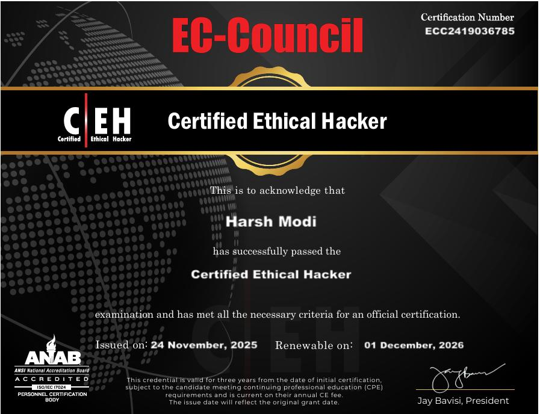
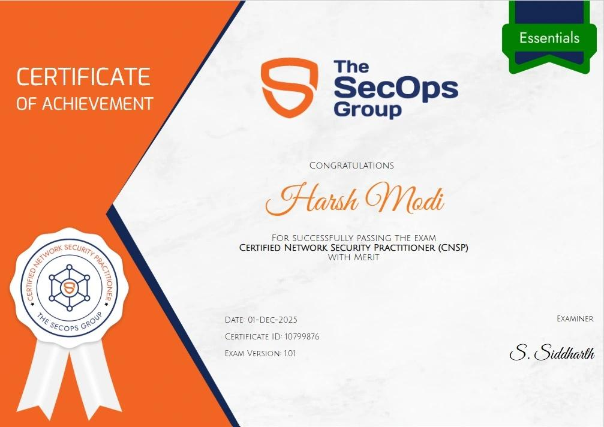
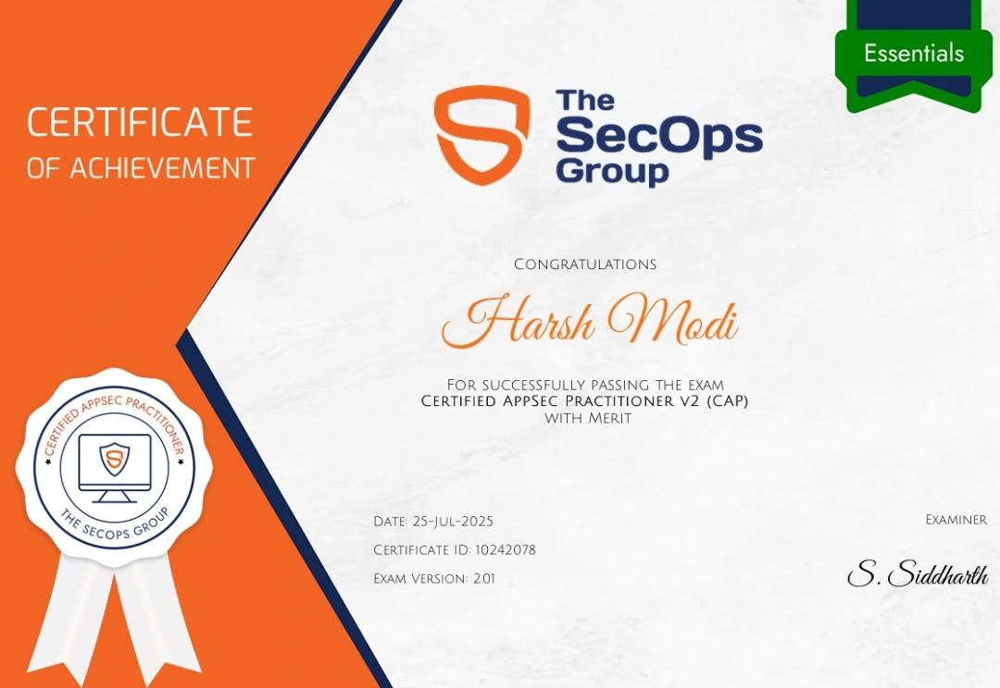
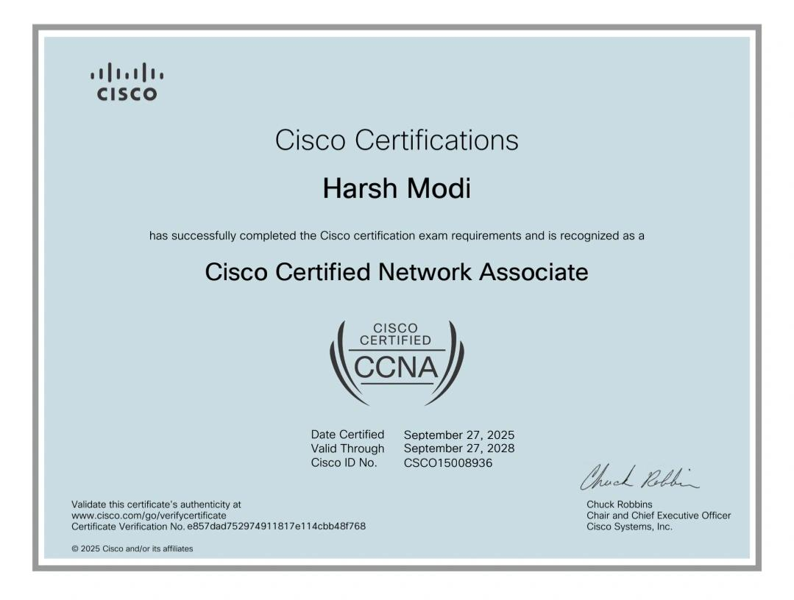
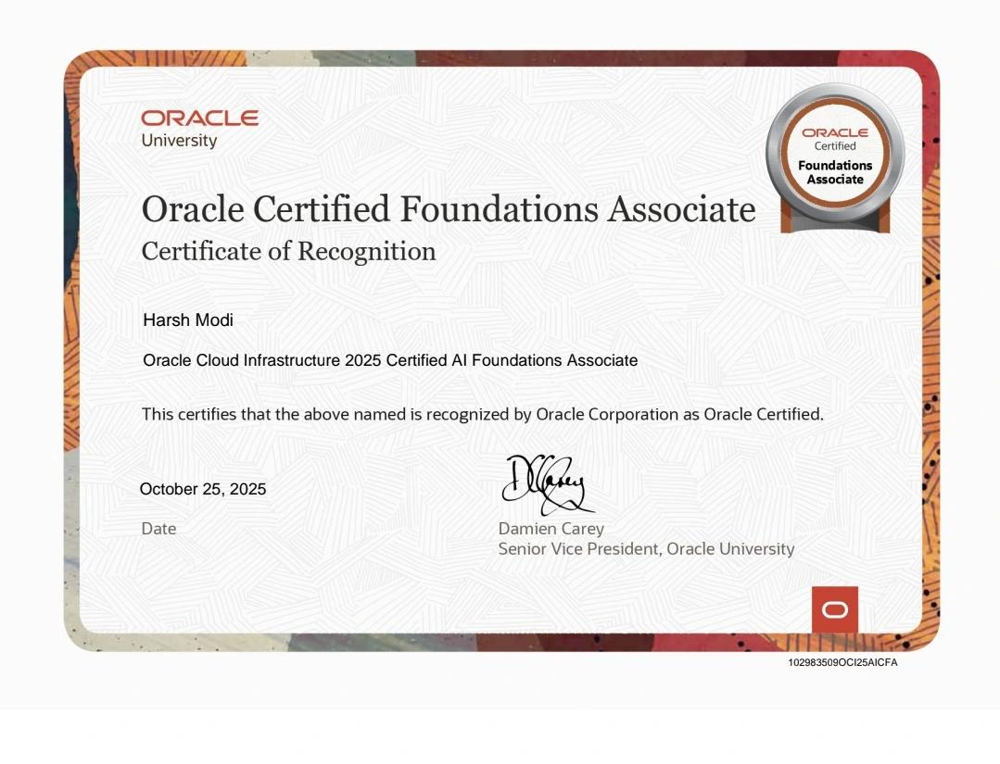

Certified Ethical Hacker - CEH v13EC-Council · Issued November 2025
A verifiable record across cybersecurity, networking, cloud and AI. Open any document to inspect the original certificate.
Certifications provide the technical vocabulary. Experience provides the judgment to know what matters. Together they support a practical approach to information security.





